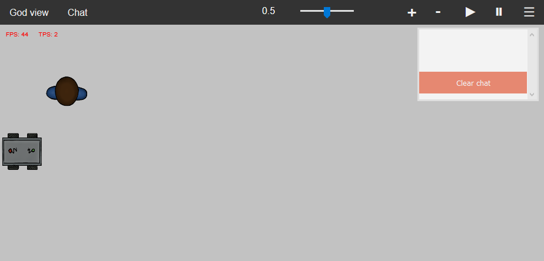

Creating your MATRXS world¶
In order to use MATRXS, a world must be created. In this tutorial, all aspects of creating such a world will be demonstrated. Everything that is demonstrated can also be found in the MATRXS package under `Examples’.
Setting the world¶
We will start creating the frame in which we set up our world. All code explained in this section can be found in create_world_factory.py. The factory is created so that, might we need to run multiple world simultaneously (e.g. for experiments), we can set the amount of worlds needed.
We start out by creating a factory method that can be called once the world(s) is/are made:
def create_factory():
factory = WorldBuilder(...)
return factory
In this method, the WorldBuilder class is used to set the parameters in our world. These parameters are: shape, tick_duration, random_seed, simulation_goal, run_sail_api, run_visualization_server, visualization_bg_clr, visualization_bg_img, and verbose. The only parameter that is not set while intiliazing the class is the `shape’ parameter. We need to choose a shape that indicates the size we want our world to be.
def create_factory():
factory = WorldBuilder(shape=[22, 10])
return factory
Adding agents¶
Now that we have a world, we can also put agents and objects in the simulation. Suppose we want one human agent to interact with one autonomous agent. For now, the autonomous agent uses the simple behaviour of the PatrollingAgentBrain. It needs a range in which to patrol, so we add some ranges as parameters.
def create_factory():
factory = WorldBuilder(shape=[22, 10])
human_agent = HumanAgentBrain()
autonomous_agent = PatrollingAgentBrain(waypoints=[(0, 0), (0, 7)])
return factory
The human agent is controlled by the user of the simulation. It needs to know what actions can be performed after what command. For now, the human agent can move to the North, East, South and West. We immediately add the agent to the factory and give it a location and name, and also by feeding it the possible user input. There are several icons available to visually represent the agent in the simulation. To use a different icon than the example (`civilian.png’} below, check the `avatars’ folder in the package for options.
def create_factory():
factory = WorldBuilder(shape=[22, 10])
human_agent = HumanAgentBrain()
autonomous_agent = PatrollingAgentBrain(waypoints=[(0, 0), (0, 7)])
usrinp_action_map = {
'w': MoveNorth.__name__,
'd': MoveEast.__name__,
's': MoveSouth.__name__,
'a': MoveWest.__name__,
}
factory.add_human_agent([1,1], human_agent, name="Henry",
usrinp_action_map=usrinp_action_map, visualize_shape='img',
img_name="civilian.png")
return factory
Adding the autonomous agent works approximately the same as adding a human agent, but using `.add_agent’ instead of `.add_human_agent’. In a similar way, objects like walls can also be added.
Now, we can try and run our simple MATRXS simulation. We create our `main.py’ like below. We can choose to run multiple worlds simultaneously, but for now we run only one instance. Do not forget to import all necessary modules and classes!
import examples.create_world_factory as tutorial_worldcreation
if __name__ == "__main__":
factory = tutorial_worldcreation.create_factory()
for world in factory.worlds(nr_of_worlds=1):
world.run()
Now run the main file to see the scene below.
{kind=link}